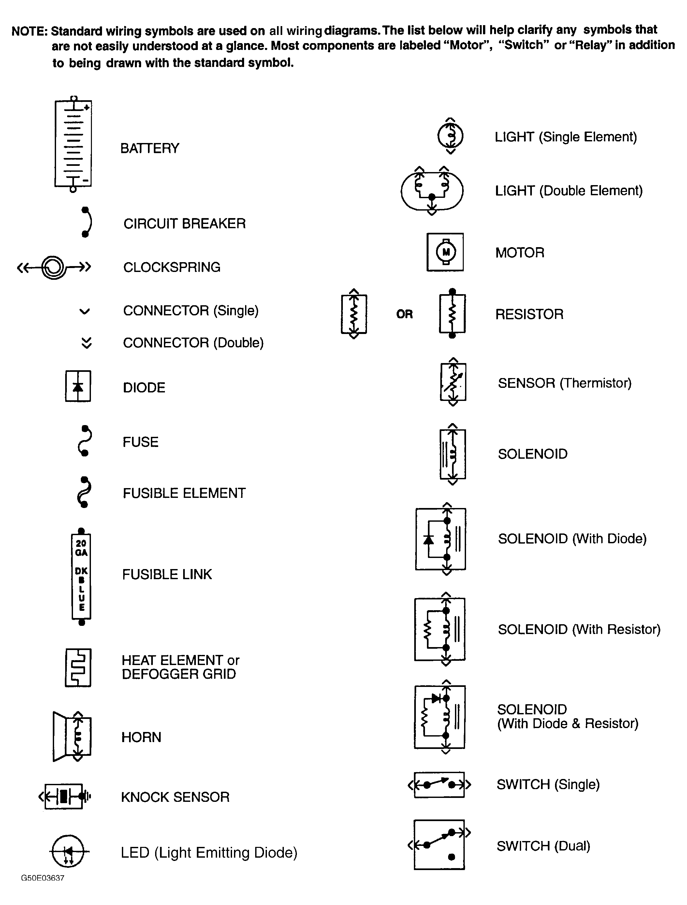

Home
>>
Scion
>>
2006
>>
xB Standard
>>
Repair and Diagnosis
>>
General Information
>>
Electrical
>>
Using lemon2025'S System Wiring Diagrams
>>
Wiring Diagram Symbols
Wiring Diagram Symbols
Fig 1: Identifying Standard Wiring Diagram Symbols
